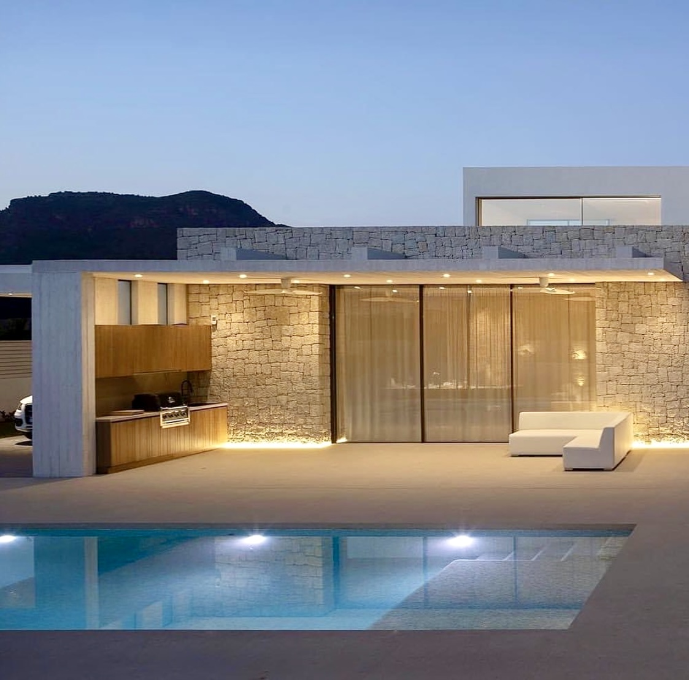

01
01
Construcción de piscinas
Desarrollamos piscinas a medida, adaptadas al espacio, al diseño arquitectónico y a los requisitos de cada obra.
Diseñamos, construimos y renovamos piscinas con soluciones adaptadas a las necesidades técnicas y estéticas de cada proyecto.
Acompañamos cada proyecto con soluciones para la construcción, renovación y cuidado de piscinas.
01
Desarrollamos piscinas a medida, adaptadas al espacio, al diseño arquitectónico y a los requisitos de cada obra.
 02
02
Renovamos piscinas existentes para actualizar sus acabados y mejorar sus instalaciones según las necesidades del proyecto.
 03
03
Atendemos las necesidades de conservación de las piscinas y la revisión de sus equipos e instalaciones.
 04
04
Soluciones para los sistemas y equipos técnicos de la piscina, adaptadas a las características de cada instalación.

Trabajamos junto a arquitectos, promotores y empresas constructoras para integrar las soluciones de piscina en las necesidades técnicas y estéticas de cada obra.
Organizamos cada proyecto en fases para trabajar con objetivos claros y una comunicación fluida.
Conocemos las necesidades, el espacio y los requisitos de la instalación.
Definimos las soluciones y coordinamos las actuaciones necesarias.
Desarrollamos los trabajos conforme al alcance y a la planificación acordados.
Revisamos el resultado y atendemos las necesidades posteriores acordadas.
Cuéntanos qué necesitas y estudiemos juntos la solución más adecuada para tu piscina.